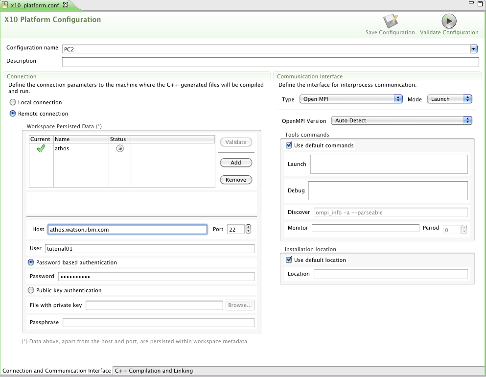
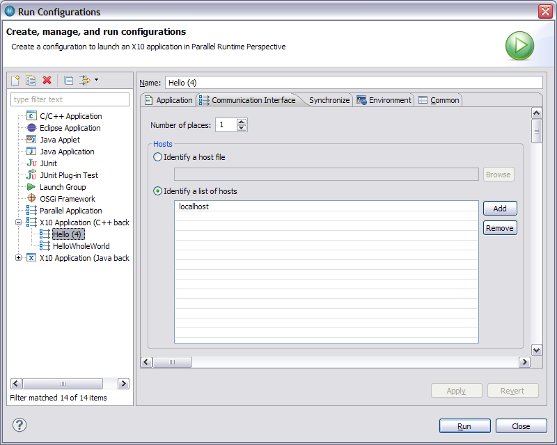

Remote Launching and Debugger Basics
X10DT allows you to compile and run your programs on different machines with the C++ back-end.
To configure how your program will compile and run on different machines, open the X10 Platform Configuration located at the root
directory of your C++-backend project. The platform configuration has 2 tabs: Connection and Communication Interface
and C++ Compilation and Linking. The communication interface allows you to select the type of interface
and to configure it. The second tab allows you to specify the configuration of C++ compilation and linking.
To setup a remote connection, go to the Connection and Communication Interface tab and select Remote Connection.
Click on Add and type the name of the new remote connection in the space inside the table under Name. Enter the host name
and the user name, as well as the password. Then hit the Validate button next to the table.
If your settings are correct a green check mark will appear next to the
name of the connection.
Change the Connection Type to Sockets and keep the default settings that appear.

Switch to the C++ Compilation and Linking tab. Specify the output folder in the home directory to use, and name
your output folder appropriately.
In the X10 Distribution field, enter the location of your X10 distribution.
This will be automatically carried to the PGAS distribution field.

Finally, hit the Validate Configuration button located at the top of the platform configuration. If all your settings are correct,
this button will turn into a smiley face. If you don't get a smiley face, go back to the 2 tabs and fix your settings according to the instructions
above.

After your platform configuration is set, you need to run the program once. To do so,
select the type with the main method, right click and select
Run As -> X10 Application (C++ back-end)
This will open the Parallel Runtime view, where you will see the output of your program when it's finished.
If this step does not work for you, then create a run configuration manually:
Run -> Run Configurations...
Double click on X10 Application (C++ back-end) to create a new Run Configuration. In the Application tab,
enter the desired project name in the X10 Project field, and
the name of the main type in the Main class field. You may use the Search... button to get the main type automatically.

In the Communication Interface tab, enter the desired number of places (needs to be >0). Check either
the Host file or List of hosts check box and enter the host file to use, or each host to use on a single line.):

When you are finished with the Run Configurations settings, and no tab shows any errors, hit Apply to save, and then hit Run.